Opeth
The Last Will And Testament Tour / February 25, 2026
Shocking pit. There was a coked up tiny asian woman hyping me up the whole time. She legit wouldnt stop screaming. Mikael is so sexy hotness.
Men I Trust
Equus Tour / January 17, 2026
Good show! Prob the only concert I've been to where I was perfectly content sitting in the balcony. HOWEVER there were two gay lovers sitting in front of me that kept making out. odd.
Lovejoy
One Simple Tour / November 4, 2025
This was the WORST concert I've ever been to. I don't even want to get into it because I start seething with rage. Just ask me in person to rant about this absolute SHIT-show. FUCK. It sucked so bad. I didn't even want to go.
GWAR and Helmet
The Return of GOR GOR / October 29, 2025
God damn this was definitely the scariest pit I've ever been in. I drank so much of blothar's blood. Helmet was unreal and I got a kitty shirt. I'm a slave to my passions.
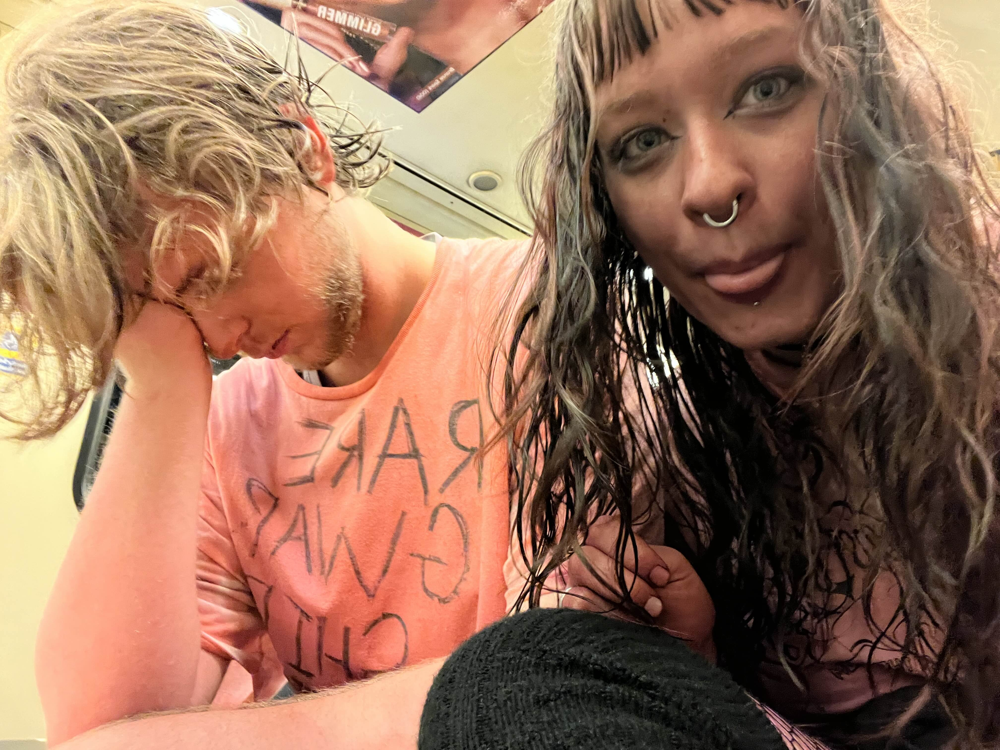

Matt Maltese
Tour For You My Whole Life / October 18, 2025
I got there so freaking early. I got RIGHT up to the front and Matt saw me bawling my eyes out. It was awesome.
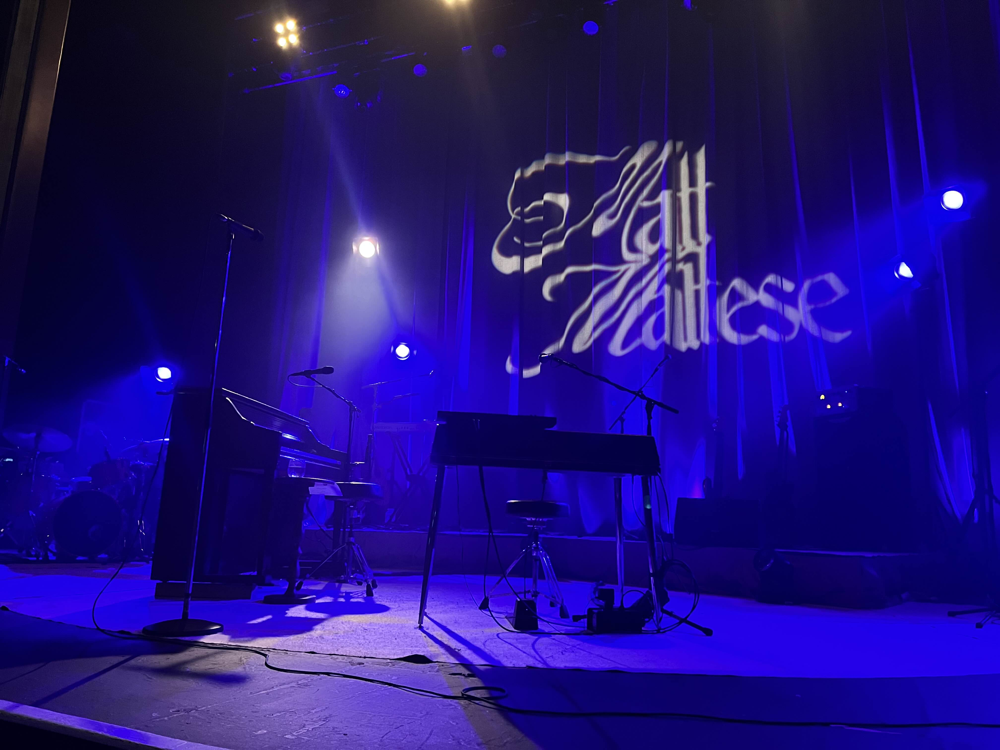
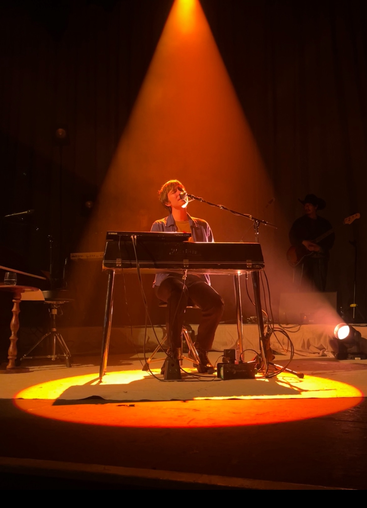
Viagra Boys
Infinite Anxiety Tour / September 11, 2025
The opener was fucking insane. It was some riot grrl band called Die Spitz. Got some of their merch. Viagra Boys were weird to watch, but cool i guess.
Deftones
North America Tour / August 22, 2025
Best concert of my life. Every song was fucking crazy. Went with my best friend and we got there 4 hours early. We didn't have VIP, but we still managed to get baricade. Left near the end to go mosh. Best pit I've been in so far. I got Fred Sablan's pick and got posted to their IG. no biggie. Saw them w/ Phantogram and Barbarians of California.
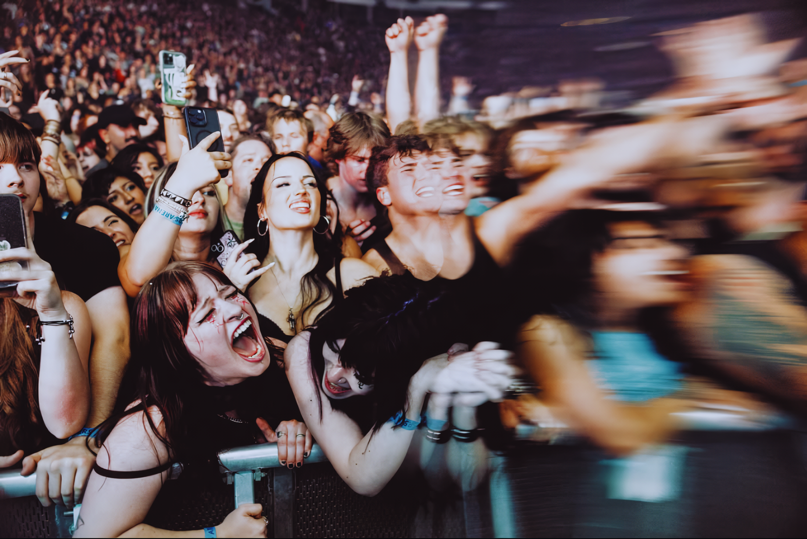
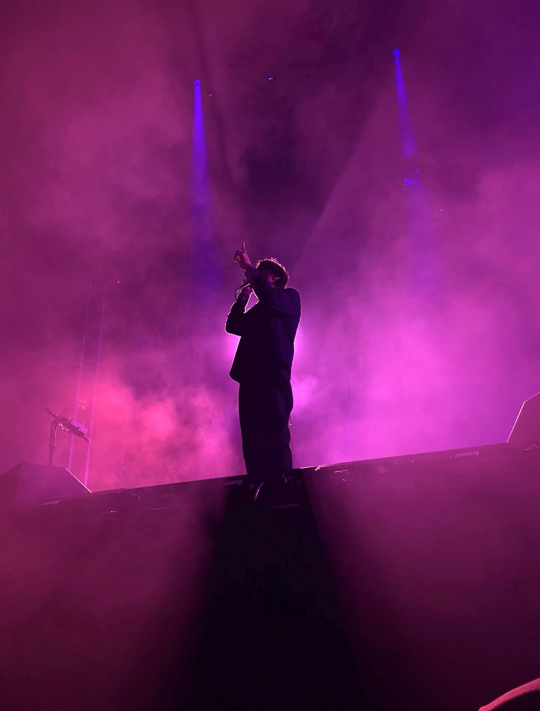
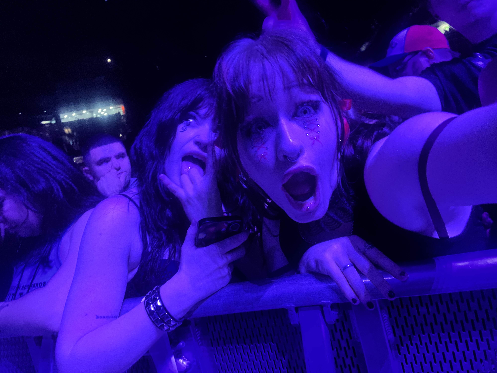
The Marías and Julie
Submarine Tour (Extended) / July 26, 2025
JULIEEEE!!!! Such a good concert. People were kind of annoying though. L crowd.
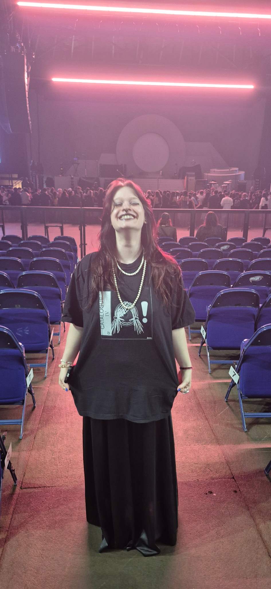
Primus, Puscifer, and A Perfect Circle
Sessanta 2.0 / June 7, 2025
Skipped my grad for this. SOOO freaking worth it. Les Claypool for valedictorian! I made a custom grad cap and gown for the concert.
Tyler, The Creator
Chromakopia / February 28, 2025
Holy fuck, my best friend and I got in line 4 hours early so we could get a good spot. We also had VIP for this one, so thank u bsf for that. We got right up to the front and Tyler threw his cookie at us. We saw him w/ Paris, Texas and Lil Yachty (hotness) so good so good !!
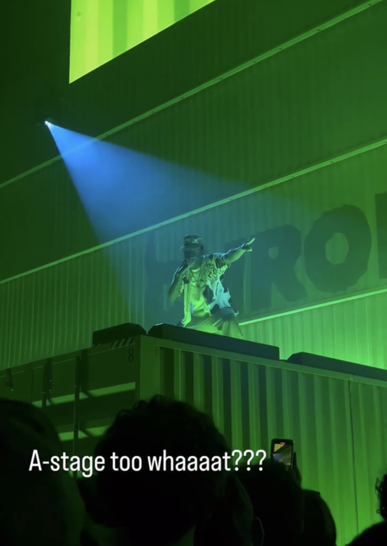
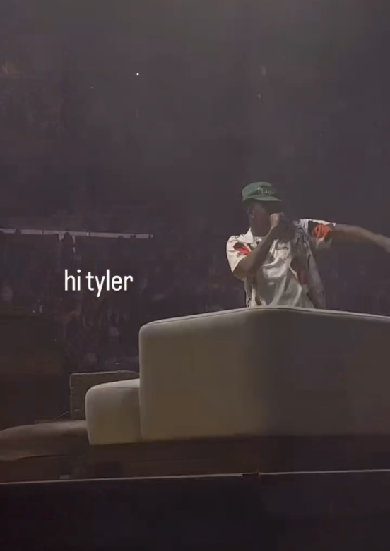
Faye Webster
Underdressed at the Symphony Tour / September 30, 2024
Went with grama!! So good. Her voice is so freaking good wowie. The bassist was also really good in her band.
PARTYNEXTDOOR
SORRY IM OUTSIDE TOUR / July 5, 2024
Went with my best friend. It was good!! I do not listen to much PND but I still loved it.
Megadeth
Crush The World Tour / April 28, 2024
I do NOT like Dave Mustaine. Saw them w/ Bullet for my Valentine and Oni. BFMV was so so good!!
Amon Amarth, Cannibal Corpse, Obituary, and Frozen Soul
Metal Crushes All Tour / April 27, 2024
Moshed like craaazzyyyyyy. Some guy took a selfie w/ me and posted it on his instagram with the song "Stripped, Raped, and Strangled" by CC. He was like 40. Pretty lit if you ask me.
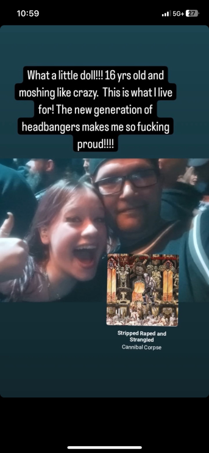
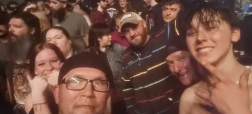
Matt Maltese
Touring Just to Tour / April 2, 2024
Went with my grama and I managed to get like three people from the front. Pretty epic!!
Meshuggah, WhiteChapel, and In Flames
North American Tour / November 25, 2023
Deadass do not remember this concert at all, but it was Meshuggah so I'm sure it was good. I was NOT in the pit for this one.
Travis Scott
Utopia - Circus Maximus Tour / November 10, 2023
fein fein fein fein fein fein fein fein
Billy Talent
PNE Summer Night Concerts / August 25, 2023
No idea how I got pissed on in a pop punk pit... but I guess shit happens?
Tyler, The Creator
CMIYGL / April 7, 2022
Went with my bestest friend and we got alright seats... we saw him w/ Kali Uchis and Vince Staples !